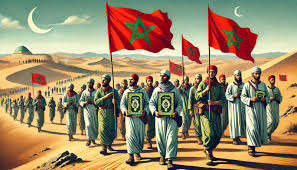
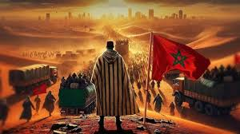

نبذة عن المسيرة الخضراء
قامت المسيرة الخضراء على أرض مدينة طرفاية جنوب المغرب، وحدثت المسيرة الخضراء على أرض دولة المغرب في شهر تشرين الثاني عام 1975م بعد أن تم التمهيد لها على مستوى كبير لجميع أفراد الدولة

سبب تخليد ذكرى عيد المسيرة الخضراء
تعد المسيرة الخضراء واحدة من رموز بلد المغرب التي ساهمت بشكلٍ ما في الحفاظ على أحد أجزاء أراضيه، بالإضافة إلى كونها أكبر مسيرة سلمية حصلت في العالم على مدى العديد من الأعوام، فقد كانت القوى الأجنبية محتلةً للصحراء المغربية منذ عام 1884م، وعليه فقد قام المغرب بتقديم اعتراضات للقضاء الدولي بأن هناك روابط وثيقة بين هذه الصحراء وبين القادة والمغاربة والعرش الذي كان يمثله الحكام المغربيون، في حين أن دولة أخرى من جهتها قد قامت بتقديم نفس الاعتراضات وقالت بأن الصحراء منسوبة إليها منذ الأزل، الأمر الذي دفع بعض القبائل التي كانت تسكن الصحراء في البحث عن حريتها واستقلالها لتتخلص من النزاع الذي نشأ عليها، وعليه في عام 1975م وتحديدًا في شهر أكتوبر أقر القضاء الدولي بأن الصحراء تابعة للعرش المغربي وأنها الأحق به، إلا أن أهالي وسكّان الصحراء عليهم اتخاذ القرار في ذلك، وعليه تمت دعوة كافة أطراف ومواطني المغرب إلى التقدم نحو مسيرة سلمية إلى الصحراء لضمها إلى البلاد، الأمر الذي دعى الشعب المغربي إلى الاحتفال بذلك في كل سنة واعتباره عيدًا لما ترك فيهم من فخر وأثر كبير في الاعتزاز بالدولة والوحدة الوطنية التي كانت سببًا في الحفاظ على جزء مهم من أراضي المغرب، بالإصرار والشجاعة اللذين كانا ضروريين لتحقيق النجاح في ضم الصحراء إلى دولة المغرب كوحدة واحدة لا تتجزأ مع الدول الأخرى
.jpeg)
.jpeg)